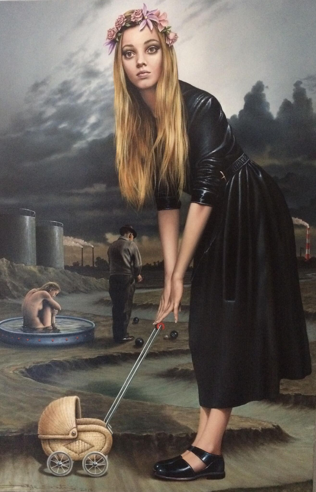

1959
Born in 1959, Jorge Santos is of Portuguese descent.
His childhood was spent in Luanda, Angola before his family fled to Lisbon, Portugal in order to escape a violent political agenda.
As Portugal sunk into its own revolution, Santos relocated to the United States in 1982.
Throughout these years the artist consistently honed his draftsmanship as a form of escape from life’s unrest.
Particularly struck by an Odd Nerdrum show at Forum Gallery, NY in the 90s, Santos began to experiment with and use paint thereafter.
Selected Solo Exhibitions
2013 101 Exhibit, Los Angeles, CA
2010 101 Exhibit, Miami, FL
2009 Nicolaysen Museum, Casper WY
2009 Evan Lurie Gallery, Carmel IN
2008 Klaudia Marr Gallery, Santa Fe, NM
2007 George Billis Gallery, Los Angeles, CA
2006 Andrea Schwartz Gallery, San Francisco, CA
2005 Gallery Saint Germain, W. Hollywood, CA
2004 Glass Garage Gallery, West Hollywood, CA
2004 Lurie Fine Art Gallery, Bocaraton, FL
2003 Glass Garage Gallery, West Hollywood, CA
2002 Glass Garage Gallery, West Hollywood, CA
2001 Glass Garage Gallery, West Hollywood, CA
2000 Mendenhall Gallery, Pasadena, CA
1999 Mendenhall Gallery, Pasadena, CA
1993 Louis Newman Galleries, Beverly Hills, CA
1993 Art of Hands Gallery, Costa Mesa, CA
1993 MRL Gallery, Long Beach, CA
1992 MRL Gallery, Long Beach, CA
1991 MRL Gallery, Long Beach, CA
1990 MRL Gallery, Long Beach, CA
1989 MRL Gallery, Long Beach, CA
Selected Group Exhibitions
2020 Art Palm Beach, Palm Beach , FL
2020 Wynwood, Miami ,FL
2020 RJD Gallery, Bridgehampton, NY
2019 Art Market, Bridgehampton, NY
2019 Palm Beach Art Modern Contemporary, Palm Beach, FL
2019 Art Palm Beach, Palm Beach, FL
2019 Wynwood, Miami, FL
2019 Art San Francisco, San Francisco, CA
2019 RJD Gallery, Bridgehampton, NY
2019 SOFA, Chicago, IL
2019 Texas Contemporary, Houston, TX
2019 CONTEXT/Art Miami, Miami, FL
2019 Evan Lurie Gallery, Carmel, IN
2018 Art Miami, Miami, FL
2017 Art Palm Beach, Palm Beach, FL
2017 Art Market, San Francisco, CA
2017 Art Market, Bridgehampton, NY
2017 Scope, Miami, FL
2017 Red Dot, Miami, FL
2017 Art San Diego, Del Mar, CA
2016 Scope, Miami, FL
2016 101 Exhibit, Los Angeles, CA
2016 Art Los Angeles Contemporary, Los Angeles, CA
2016 artMRKT Hamptons, Bridgehampton, NY
2016 Art South Hampton, Southhampton, NY
2016 EVOKE Gallery, Santa Fe, NM
2016 Art Aspen, Aspen, CO
2016 Art Boca Raton, Boca Raton, FL
2016 Art Palm Springs, Palm Springs, CA
2015 Scope, Miami, FL
2015 Houston Fine Art, Houston, TX
2015 Art Aspen, Aspen, CO
2015 Art Hamptons, Bridgehampton, NY
2015 EVOKE Gallery, Santa Fe, NM
2014 Houston Fine Art, Houston, TX
2014 ArtMRKT Hamptons, Bridgehampton, NY
2014 Art Hamptons, Bridgehampton, NY
2014 EVOKE Gallery, Santa Fe, NM
2014 Art Palm Beach, Palm Beach, FL
2013 Miami Project, Miami, FL
2013 Scope, Miami FL
2013 Houston Fine ART, Houston, TX
2013 artMRKT Hamptons, Bridgehampton, NY
2013 Art Hamptons, Bridgehampton, NY
2013 LA ART Show, Los Angeles, CA
2013 Art Palm Beach, Palm Beach, FL
2012 Art Miami, Miami, FL
2012 SCOPE, Miami, FL
2012 artMRKT Hamptons, Bridgehampton, NY
2012 EVOKE Gallery, Santa Fe, NM
2012 101/Exhibit, Miami, FL
2012 Evan Lurie Gallery, Carmel IN
2012 San Francisco Fine Art Fair, San Francisco, CA
2012 Art Platform, Santa Monica, CA
2012 Art South Hampton, Southhampton, NY
2012 Houston Fine Art Fair, Houston, TX
2011 SCOPE, Miami, FL
2011 Red Dot, Miami, FL
2011 Art Hamptons, Bridgehampton, NY
2011 artMRKT Hamptons, Bridgehampton, NY
2011 EVOKE Gallery, Santa Fe, NM
2011 Art Palm Beach, Palm Beach, FL
2011 Art Los Angles Contemporary, Los Angeles, CA
2011 Art Chicago, Chicago, IL
2011 San Francisco Art Fair, San Francisco, CA
2010 SCOPE, Miami, FL
2010 George Billis Gallery, Los Angeles, CA
2009 George Billis Gallery, New York, NY
2009 Klaudia Marr Gallery, Santa Fe, NM
2008 George Billis Gallery, Los Angeles, CA
2008 Evan Lurie Gallery, Carmel, IN
2008 Laguna Beach Art Museum, Laguna Beach, CA
2008 LA Art Fair, Los Angeles, CA
2007 Lurie Galleries, Miami, FL
2007 Klaudia Marr Gallery, Santa Fe, NM
2007 Evan Lurie Gallery, Carmel, IN
2007 Naomi Silva Gallery, Atlanta, GA
2006 Andrea Schwartz Gallery, San Francisco, CA
2006 7-0-7 Contemporary Gallery, Santa Fe, NM
2006 SOHO Fine Art Galleries, Studio City, CA
2006 Art Chicago, Chicago, IL
2006 Lurie Galleries, Miami, FL
2005 Gallery Saint Germain, W. Hollywood, CA
2005 LA Art Fair, Los Angeles, CA
2005 Kent Gallery, Key West, FL
2005 Mendenhall Sobieski Gallery, Pasadena, CA
2004 Kent Gallery, Key West, FL
2004 Broadway Gallery, Fort Lauderdale, FL
2003 Glass Garage Gallery, West Hollywood, CA
2002 Soho Gallery, Studio City, CA
2002 Greenwood Chebithes Gallery, Laguna Beach, CA
2001 Glass Garage Gallery, West Hollywood, CA
2000 Mendenhall Gallery, Pasadena, CA
1999 Mendenhall Gallery, Pasadena,CA
1998 Modernism Show, Santa Monica, CA
1998 Miami Art Fair, Miami, FL
1998 Mendenhall Gallery, Pasadena, CA
1997 Solomon Gallery, Los Angeles, CA
1997 MB Modern, New York, NY
1996 Horwitch Newman Gallery, Scottsdale, AZ
1996 Solomon Gallery, Los Angeles, CA
1995 Koplin Gallery, Santa Monica, CA
1994 Horwitch Newman Gallery, Scottsdale, AZ
1994 Louis Newman Galleries, Beverly Hills, CA
1994 Louis Newman Galleries, Beverly Hills, CA
1993 Artspace Gallery, Woodland Hills, CA
1993 Joslyn Art Center Gallery, Torrance, CA
1992 South Bay Contemporary Museum of Art, Torrance, CA
1992 LA Art Core, Los Angeles, CA
1991 Joslyn Art Center Gallery, Torrance, CA
1990 Harris Fine Art Center, Provo UT
1989 Orlando Gallery, Sherman Oaks, CA
1988 International Art Show Olympic Games, Seoul, Korea
1986 Joslyn Art Center Gallery, Torrance, CA
Jorge Santos paintings are a profound display of picture making for the sheer purposes of formulating an all but transparent narrative via highly technical draftsmanship and paint handling. As a self-taught artist, the evolutionary process of his work is often subject to reconfiguration, repositioning, and refinement until the grand conclusion is met. Narrative is of such importance that even compositional concerns may be subordinate to the inclusion of a necessary motif in the storyline.
One may recall the Latin term “deus ex machina”, which is a literary device used to resolve a troubled plot. In English, this translates to “God out of the machine”. It refers to an unexpected, artificial, or improbable character, device, or event introduced suddenly in a work of fiction to untangle a plot. For instance, consider the artist’s 2012 work entitled Maitre D where a fork between one of the dinner participant’s toes is tied by string to a wine bottle in the foreground thus preventing it from crashing to the floor. How or why did this happen? This whimsical instance is the result of a mid-production decision to reposition compositional elements in order to resolve the foreground in a more provocative way without having to repaint the bottle.
This almost humorous result often surfaces in a Santos work, as for the artist, there are little rules he truly feels the need to play by. Paintings for the artist exist as a cocktail of source materials, from still life to imagery or the mind’s eye. They are not pre-assembled sets such as that of the Realist painter, and any “photo realist” instances are purely the result of the artist’s skill to portray a likeness. In fact, the ambient lighting and elongated figures are more stylized than authentic, echoing the Italian Mannerist painters of the 16th century.
Though highly refined and emotive, a Santos painting may have a poetic title but this is not a necessity, it’s just by way of the artist’s improvisational nature. He seems to be commenting on pop culture, derives source material from TV, Internet videos, and other mass media but is humble and quite reluctant to be billed as a social critic. In his pictures, settings come off as irrational or precariously balanced, moods are secretive, illusory, and often ambiguous but there is no argument to their blatant allure and charm over the viewer. These complexities may seem to deliberately provoke interpretation but Santos will only entertain his personal opinion that he is simply an image-maker.
Jorge Santos has exhibited previously with 101/exhibit for a solo show in Miami in 2010. He has participated in over 20 solo and 70 group exhibitions at numerous galleries, museums, and fine art fairs since 1986 including the Laguna Beach Art Museum in Laguna Beach, CA; the Joslyn Art Center Gallery in Torrance, CA; Art Miami, Miami, FL; Art Platform, Santa Monica, CA; Art Chicago, Chicago, IL; SCOPE, Miami, FL; and Art Los Angeles Contemporary and George Billis Gallery in Los Angeles, CA.